uml/reference_01-16-1_Delay
@startuml Alice -> Bob: Authentication Request ... Bob --> Alice: Authentication Response ...5 minutes latter... Bob --> Alice: Bye ! @enduml

These are examples taken from the official documentation: https://plantuml.com/ Generated by Plantuml syntax Test.
uml/actor@startuml actor Alice #green ' a comment this is participant Bob box "Sweet deal" participant "Mr funky foo" as M #EAA participant "Mr. Sleepy" as S #AEA end box ref over Alice, Bob: init == Auth Plot == Alice --> Bob: Authenticaion Request Bob --> Alice: Successful auth Bob --> M: Alice is on M --> Alice: Hello Alice, I am M ...time passes... M --> S: Here is some dough! Alice --> Alice: Say, is it breezy? activate Alice ||22|| Alice --> M: Pleased to meet you,\nNow about Bob... ||22|| destroy Alice Bob --> M: Woops, Alice was destroyed deactivate Bob == Revival == activate M M ->]: << createSomeFoo >> M <--]: DidMakeSomeFoo M -->o Alice: Thou art revived! deactivate M @enduml |
uml/Arrows_both@startuml Bob <-> Alice Bob o<-> Alice Bob x<-> Alice Bob <--> Alice Bob o<--> Alice Bob x<--> Alice Bob <<-> Alice Bob o<<-> Alice Bob x<<-> Alice Bob <<--> Alice Bob o<<--> Alice Bob x<<--> Alice Bob \-> Alice Bob o\-> Alice Bob x\-> Alice Bob \--> Alice Bob o\--> Alice Bob x\--> Alice Bob \\-> Alice Bob o\\-> Alice Bob x\\-> Alice Bob \\--> Alice Bob o\\--> Alice Bob x\\--> Alice Bob /-> Alice Bob o/-> Alice Bob x/-> Alice Bob /--> Alice Bob o/--> Alice Bob x/--> Alice Bob //-> Alice Bob o//-> Alice Bob x//-> Alice Bob //--> Alice Bob o//--> Alice Bob x//--> Alice Bob <->o Alice Bob o<->o Alice Bob x<->o Alice Bob <-->o Alice Bob o<-->o Alice Bob x<-->o Alice Bob <<->o Alice Bob o<<->o Alice Bob x<<->o Alice Bob <<-->o Alice Bob o<<-->o Alice Bob x<<-->o Alice Bob \->o Alice Bob o\->o Alice Bob x\->o Alice Bob \-->o Alice Bob o\-->o Alice Bob x\-->o Alice Bob \\->o Alice Bob o\\->o Alice Bob x\\->o Alice Bob \\-->o Alice Bob o\\-->o Alice Bob x\\-->o Alice Bob /->o Alice Bob o/->o Alice Bob x/->o Alice Bob /-->o Alice Bob o/-->o Alice Bob x/-->o Alice Bob //->o Alice Bob o//->o Alice Bob x//->o Alice Bob //-->o Alice Bob o//-->o Alice Bob x//-->o Alice Bob <->x Alice Bob o<->x Alice Bob x<->x Alice Bob <-->x Alice Bob o<-->x Alice Bob x<-->x Alice Bob <<->x Alice Bob o<<->x Alice Bob x<<->x Alice Bob <<-->x Alice Bob o<<-->x Alice Bob x<<-->x Alice Bob \->x Alice Bob o\->x Alice Bob x\->x Alice Bob \-->x Alice Bob o\-->x Alice Bob x\-->x Alice Bob \\->x Alice Bob o\\->x Alice Bob x\\->x Alice Bob \\-->x Alice Bob o\\-->x Alice Bob x\\-->x Alice Bob /->x Alice Bob o/->x Alice Bob x/->x Alice Bob /-->x Alice Bob o/-->x Alice Bob x/-->x Alice Bob //->x Alice Bob o//->x Alice Bob x//->x Alice Bob //-->x Alice Bob o//-->x Alice Bob x//-->x Alice Bob <->> Alice Bob o<->> Alice Bob x<->> Alice Bob <-->> Alice Bob o<-->> Alice Bob x<-->> Alice Bob <<->> Alice Bob o<<->> Alice Bob x<<->> Alice Bob <<-->> Alice Bob o<<-->> Alice Bob x<<-->> Alice Bob \->> Alice Bob o\->> Alice Bob x\->> Alice Bob \-->> Alice Bob o\-->> Alice Bob x\-->> Alice Bob \\->> Alice Bob o\\->> Alice Bob x\\->> Alice Bob \\-->> Alice Bob o\\-->> Alice Bob x\\-->> Alice Bob /->> Alice Bob o/->> Alice Bob x/->> Alice Bob /-->> Alice Bob o/-->> Alice Bob x/-->> Alice Bob //->> Alice Bob o//->> Alice Bob x//->> Alice Bob //-->> Alice Bob o//-->> Alice Bob x//-->> Alice Bob <->>o Alice Bob o<->>o Alice Bob x<->>o Alice Bob <-->>o Alice Bob o<-->>o Alice Bob x<-->>o Alice Bob <<->>o Alice Bob o<<->>o Alice Bob x<<->>o Alice Bob <<-->>o Alice Bob o<<-->>o Alice Bob x<<-->>o Alice Bob \->>o Alice Bob o\->>o Alice Bob x\->>o Alice Bob \-->>o Alice Bob o\-->>o Alice Bob x\-->>o Alice Bob \\->>o Alice Bob o\\->>o Alice Bob x\\->>o Alice Bob \\-->>o Alice Bob o\\-->>o Alice Bob x\\-->>o Alice Bob /->>o Alice Bob o/->>o Alice Bob x/->>o Alice Bob /-->>o Alice Bob o/-->>o Alice Bob x/-->>o Alice Bob //->>o Alice Bob o//->>o Alice Bob x//->>o Alice Bob //-->>o Alice Bob o//-->>o Alice Bob x//-->>o Alice Bob <->>x Alice Bob o<->>x Alice Bob x<->>x Alice Bob <-->>x Alice Bob o<-->>x Alice Bob x<-->>x Alice Bob <<->>x Alice Bob o<<->>x Alice Bob x<<->>x Alice Bob <<-->>x Alice Bob o<<-->>x Alice Bob x<<-->>x Alice Bob \->>x Alice Bob o\->>x Alice Bob x\->>x Alice Bob \-->>x Alice Bob o\-->>x Alice Bob x\-->>x Alice Bob \\->>x Alice Bob o\\->>x Alice Bob x\\->>x Alice Bob \\-->>x Alice Bob o\\-->>x Alice Bob x\\-->>x Alice Bob /->>x Alice Bob o/->>x Alice Bob x/->>x Alice Bob /-->>x Alice Bob o/-->>x Alice Bob x/-->>x Alice Bob //->>x Alice Bob o//->>x Alice Bob x//->>x Alice Bob //-->>x Alice Bob o//-->>x Alice Bob x//-->>x Alice Bob <-\ Alice Bob o<-\ Alice Bob x<-\ Alice Bob <--\ Alice Bob o<--\ Alice Bob x<--\ Alice Bob <<-\ Alice Bob o<<-\ Alice Bob x<<-\ Alice Bob <<--\ Alice Bob o<<--\ Alice Bob x<<--\ Alice Bob \-\ Alice Bob o\-\ Alice Bob x\-\ Alice Bob \--\ Alice Bob o\--\ Alice Bob x\--\ Alice Bob \\-\ Alice Bob o\\-\ Alice Bob x\\-\ Alice Bob \\--\ Alice Bob o\\--\ Alice Bob x\\--\ Alice Bob /-\ Alice Bob o/-\ Alice Bob x/-\ Alice Bob /--\ Alice Bob o/--\ Alice Bob x/--\ Alice Bob //-\ Alice Bob o//-\ Alice Bob x//-\ Alice Bob //--\ Alice Bob o//--\ Alice Bob x//--\ Alice Bob <-\o Alice Bob o<-\o Alice Bob x<-\o Alice Bob <--\o Alice Bob o<--\o Alice Bob x<--\o Alice Bob <<-\o Alice Bob o<<-\o Alice Bob x<<-\o Alice Bob <<--\o Alice Bob o<<--\o Alice Bob x<<--\o Alice Bob \-\o Alice Bob o\-\o Alice Bob x\-\o Alice Bob \--\o Alice Bob o\--\o Alice Bob x\--\o Alice Bob \\-\o Alice Bob o\\-\o Alice Bob x\\-\o Alice Bob \\--\o Alice Bob o\\--\o Alice Bob x\\--\o Alice Bob /-\o Alice Bob o/-\o Alice Bob x/-\o Alice Bob /--\o Alice Bob o/--\o Alice Bob x/--\o Alice Bob //-\o Alice Bob o//-\o Alice Bob x//-\o Alice Bob //--\o Alice Bob o//--\o Alice Bob x//--\o Alice Bob <-\x Alice Bob o<-\x Alice Bob x<-\x Alice Bob <--\x Alice Bob o<--\x Alice Bob x<--\x Alice Bob <<-\x Alice Bob o<<-\x Alice Bob x<<-\x Alice Bob <<--\x Alice Bob o<<--\x Alice Bob x<<--\x Alice Bob \-\x Alice Bob o\-\x Alice Bob x\-\x Alice Bob \--\x Alice Bob o\--\x Alice Bob x\--\x Alice Bob \\-\x Alice Bob o\\-\x Alice Bob x\\-\x Alice Bob \\--\x Alice Bob o\\--\x Alice Bob x\\--\x Alice Bob /-\x Alice Bob o/-\x Alice Bob x/-\x Alice Bob /--\x Alice Bob o/--\x Alice Bob x/--\x Alice Bob //-\x Alice Bob o//-\x Alice Bob x//-\x Alice Bob //--\x Alice Bob o//--\x Alice Bob x//--\x Alice Bob <-\\ Alice Bob o<-\\ Alice Bob x<-\\ Alice Bob <--\\ Alice Bob o<--\\ Alice Bob x<--\\ Alice Bob <<-\\ Alice Bob o<<-\\ Alice Bob x<<-\\ Alice Bob <<--\\ Alice Bob o<<--\\ Alice Bob x<<--\\ Alice Bob \-\\ Alice Bob o\-\\ Alice Bob x\-\\ Alice Bob \--\\ Alice Bob o\--\\ Alice Bob x\--\\ Alice Bob \\-\\ Alice Bob o\\-\\ Alice Bob x\\-\\ Alice Bob \\--\\ Alice Bob o\\--\\ Alice Bob x\\--\\ Alice Bob /-\\ Alice Bob o/-\\ Alice Bob x/-\\ Alice Bob /--\\ Alice Bob o/--\\ Alice Bob x/--\\ Alice Bob //-\\ Alice Bob o//-\\ Alice Bob x//-\\ Alice Bob //--\\ Alice Bob o//--\\ Alice Bob x//--\\ Alice Bob <-\\o Alice Bob o<-\\o Alice Bob x<-\\o Alice Bob <--\\o Alice Bob o<--\\o Alice Bob x<--\\o Alice Bob <<-\\o Alice Bob o<<-\\o Alice Bob x<<-\\o Alice Bob <<--\\o Alice Bob o<<--\\o Alice Bob x<<--\\o Alice Bob \-\\o Alice Bob o\-\\o Alice Bob x\-\\o Alice Bob \--\\o Alice Bob o\--\\o Alice Bob x\--\\o Alice Bob \\-\\o Alice Bob o\\-\\o Alice Bob x\\-\\o Alice Bob \\--\\o Alice Bob o\\--\\o Alice Bob x\\--\\o Alice Bob /-\\o Alice Bob o/-\\o Alice Bob x/-\\o Alice Bob /--\\o Alice Bob o/--\\o Alice Bob x/--\\o Alice Bob //-\\o Alice Bob o//-\\o Alice Bob x//-\\o Alice Bob //--\\o Alice Bob o//--\\o Alice Bob x//--\\o Alice Bob <-\\x Alice Bob o<-\\x Alice Bob x<-\\x Alice Bob <--\\x Alice Bob o<--\\x Alice Bob x<--\\x Alice Bob <<-\\x Alice Bob o<<-\\x Alice Bob x<<-\\x Alice Bob <<--\\x Alice Bob o<<--\\x Alice Bob x<<--\\x Alice Bob \-\\x Alice Bob o\-\\x Alice Bob x\-\\x Alice Bob \--\\x Alice Bob o\--\\x Alice Bob x\--\\x Alice Bob \\-\\x Alice Bob o\\-\\x Alice Bob x\\-\\x Alice Bob \\--\\x Alice Bob o\\--\\x Alice Bob x\\--\\x Alice Bob /-\\x Alice Bob o/-\\x Alice Bob x/-\\x Alice Bob /--\\x Alice Bob o/--\\x Alice Bob x/--\\x Alice Bob //-\\x Alice Bob o//-\\x Alice Bob x//-\\x Alice Bob //--\\x Alice Bob o//--\\x Alice Bob x//--\\x Alice Bob <-/ Alice Bob o<-/ Alice Bob x<-/ Alice Bob <--/ Alice Bob o<--/ Alice Bob x<--/ Alice Bob <<-/ Alice Bob o<<-/ Alice Bob x<<-/ Alice Bob <<--/ Alice Bob o<<--/ Alice Bob x<<--/ Alice Bob \-/ Alice Bob o\-/ Alice Bob x\-/ Alice Bob \--/ Alice Bob o\--/ Alice Bob x\--/ Alice Bob \\-/ Alice Bob o\\-/ Alice Bob x\\-/ Alice Bob \\--/ Alice Bob o\\--/ Alice Bob x\\--/ Alice Bob /-/ Alice Bob o/-/ Alice Bob x/-/ Alice Bob /--/ Alice Bob o/--/ Alice Bob x/--/ Alice Bob //-/ Alice Bob o//-/ Alice Bob x//-/ Alice Bob //--/ Alice Bob o//--/ Alice Bob x//--/ Alice Bob <-/o Alice Bob o<-/o Alice Bob x<-/o Alice Bob <--/o Alice Bob o<--/o Alice Bob x<--/o Alice Bob <<-/o Alice Bob o<<-/o Alice Bob x<<-/o Alice Bob <<--/o Alice Bob o<<--/o Alice Bob x<<--/o Alice Bob \-/o Alice Bob o\-/o Alice Bob x\-/o Alice Bob \--/o Alice Bob o\--/o Alice Bob x\--/o Alice Bob \\-/o Alice Bob o\\-/o Alice Bob x\\-/o Alice Bob \\--/o Alice Bob o\\--/o Alice Bob x\\--/o Alice Bob /-/o Alice Bob o/-/o Alice Bob x/-/o Alice Bob /--/o Alice Bob o/--/o Alice Bob x/--/o Alice Bob //-/o Alice Bob o//-/o Alice Bob x//-/o Alice Bob //--/o Alice Bob o//--/o Alice Bob x//--/o Alice Bob <-/x Alice Bob o<-/x Alice Bob x<-/x Alice Bob <--/x Alice Bob o<--/x Alice Bob x<--/x Alice Bob <<-/x Alice Bob o<<-/x Alice Bob x<<-/x Alice Bob <<--/x Alice Bob o<<--/x Alice Bob x<<--/x Alice Bob \-/x Alice Bob o\-/x Alice Bob x\-/x Alice Bob \--/x Alice Bob o\--/x Alice Bob x\--/x Alice Bob \\-/x Alice Bob o\\-/x Alice Bob x\\-/x Alice Bob \\--/x Alice Bob o\\--/x Alice Bob x\\--/x Alice Bob /-/x Alice Bob o/-/x Alice Bob x/-/x Alice Bob /--/x Alice Bob o/--/x Alice Bob x/--/x Alice Bob //-/x Alice Bob o//-/x Alice Bob x//-/x Alice Bob //--/x Alice Bob o//--/x Alice Bob x//--/x Alice Bob <-// Alice Bob o<-// Alice Bob x<-// Alice Bob <--// Alice Bob o<--// Alice Bob x<--// Alice Bob <<-// Alice Bob o<<-// Alice Bob x<<-// Alice Bob <<--// Alice Bob o<<--// Alice Bob x<<--// Alice Bob \-// Alice Bob o\-// Alice Bob x\-// Alice Bob \--// Alice Bob o\--// Alice Bob x\--// Alice Bob \\-// Alice Bob o\\-// Alice Bob x\\-// Alice Bob \\--// Alice Bob o\\--// Alice Bob x\\--// Alice Bob /-// Alice Bob o/-// Alice Bob x/-// Alice Bob /--// Alice Bob o/--// Alice Bob x/--// Alice Bob //-// Alice Bob o//-// Alice Bob x//-// Alice Bob //--// Alice Bob o//--// Alice Bob x//--// Alice Bob <-//o Alice Bob o<-//o Alice Bob x<-//o Alice Bob <--//o Alice Bob o<--//o Alice Bob x<--//o Alice Bob <<-//o Alice Bob o<<-//o Alice Bob x<<-//o Alice Bob <<--//o Alice Bob o<<--//o Alice Bob x<<--//o Alice Bob \-//o Alice Bob o\-//o Alice Bob x\-//o Alice Bob \--//o Alice Bob o\--//o Alice Bob x\--//o Alice Bob \\-//o Alice Bob o\\-//o Alice Bob x\\-//o Alice Bob \\--//o Alice Bob o\\--//o Alice Bob x\\--//o Alice Bob /-//o Alice Bob o/-//o Alice Bob x/-//o Alice Bob /--//o Alice Bob o/--//o Alice Bob x/--//o Alice Bob //-//o Alice Bob o//-//o Alice Bob x//-//o Alice Bob //--//o Alice Bob o//--//o Alice Bob x//--//o Alice Bob <-//x Alice Bob o<-//x Alice Bob x<-//x Alice Bob <--//x Alice Bob o<--//x Alice Bob x<--//x Alice Bob <<-//x Alice Bob o<<-//x Alice Bob x<<-//x Alice Bob <<--//x Alice Bob o<<--//x Alice Bob x<<--//x Alice Bob \-//x Alice Bob o\-//x Alice Bob x\-//x Alice Bob \--//x Alice Bob o\--//x Alice Bob x\--//x Alice Bob \\-//x Alice Bob o\\-//x Alice Bob x\\-//x Alice Bob \\--//x Alice Bob o\\--//x Alice Bob x\\--//x Alice Bob /-//x Alice Bob o/-//x Alice Bob x/-//x Alice Bob /--//x Alice Bob o/--//x Alice Bob x/--//x Alice Bob //-//x Alice Bob o//-//x Alice Bob x//-//x Alice Bob //--//x Alice Bob o//--//x Alice Bob x//--//x Alice @enduml |
uml/Arrows_LR@startuml Bob -> Alice Bob ->o Alice Bob ->x Alice Bob --> Alice Bob -->o Alice Bob -->x Alice Bob ->> Alice Bob ->>o Alice Bob ->>x Alice Bob -->> Alice Bob -->>o Alice Bob -->>x Alice Bob -\ Alice Bob -\o Alice Bob -\x Alice Bob --\ Alice Bob --\o Alice Bob --\x Alice Bob -\\ Alice Bob -\\o Alice Bob -\\x Alice Bob --\\ Alice Bob --\\o Alice Bob --\\x Alice Bob -/ Alice Bob -/o Alice Bob -/x Alice Bob --/ Alice Bob --/o Alice Bob --/x Alice Bob -// Alice Bob -//o Alice Bob -//x Alice Bob --// Alice Bob --//o Alice Bob --//x Alice @enduml |
uml/Arrows_RL@startuml Bob <- Alice Bob o<- Alice Bob x<- Alice Bob <-- Alice Bob o<-- Alice Bob x<-- Alice Bob <<- Alice Bob o<<- Alice Bob x<<- Alice Bob <<-- Alice Bob o<<-- Alice Bob x<<-- Alice Bob \- Alice Bob o\- Alice Bob x\- Alice Bob \-- Alice Bob o\-- Alice Bob x\-- Alice Bob \\- Alice Bob o\\- Alice Bob x\\- Alice Bob \\-- Alice Bob o\\-- Alice Bob x\\-- Alice Bob /- Alice Bob o/- Alice Bob x/- Alice Bob /-- Alice Bob o/-- Alice Bob x/-- Alice Bob //- Alice Bob o//- Alice Bob x//- Alice Bob //-- Alice Bob o//-- Alice Bob x//-- Alice @enduml | 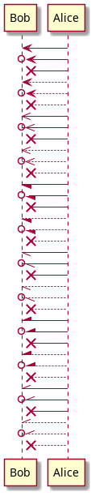 |
uml/class@startuml class Foo <<Bar>> { You can use several lines .. As you want and group == things together. -- You can have as many groups as you want. -- +publicMethod() -privateMethod() #protectedMethod() End of class } class Bar { note: This is a class .. Hello foo .. +public .. Private things prefixed with - .. -private #protected int foo String password } interface IBar { int a int b -- +public() -private() } Foo --> Bar IBar --> Foo IBar --> Bar @enduml |
uml/object@startuml title Objects and Interfaces interface Zzapper <<FooFoo>> { +publicAbc() #protectedAbc() } object Zzap { int a int b -- +publicAbc() #protectedAbc() -privateAbc() note: This is an object == note: here is a loop } object User { name = "dummy" id = 123 -- +userJump(int length) +userEat(Food food) } object Food { int calories string name } object Store { name = "superCat" id = 347 } Zzapper --> Zzap User --|> Store User --|> Zzap Food --* User Food --o Store @enduml | 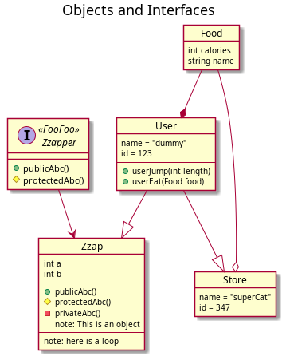 |
uml/reference_01-01-1@startuml Alice -> Bob: Authentication Request Bob --> Alice: Authentication Response Alice -> Bob: Another authentication Request Alice <-- Bob: another authentication Response @enduml | 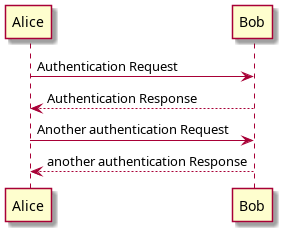 |
uml/reference_01-02-1@startuml actor Foo1 boundary Foo2 control Foo3 entity Foo4 database Foo5 Foo1 -> Foo2 : To boundary Foo1 -> Foo3 : To control Foo1 -> Foo4 : To entity Foo1 -> Foo5 : To database @enduml | 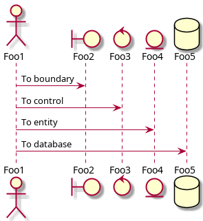 |
uml/reference_01-02-2@startuml actor Bob #red ' The only difference between actor 'and participant is the drawing participant Alice participant "I have a really\nlong name" as L #99FF99 /' You can also declare: participant L as "I have a really\nlong name" #99FF99 '/ Alice->Bob: Authentication Request Bob->Alice: Authentication Response Bob->L: Log transaction @enduml | 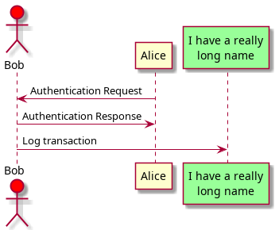 |
uml/reference_01-03-1@startuml Alice -> "Bob()" : Hello "Bob()" -> "This is very\nlong" as Long ' You can also declare: ' "Bob()" -> Long as "This is very\nlong" Long --> "Bob()" : ok @enduml | 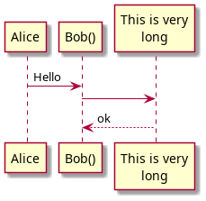 |
uml/reference_01-04-1@startuml Alice->Alice: This is a signal to self.\nIt also demonstrates\nmultiline \ntext @enduml | 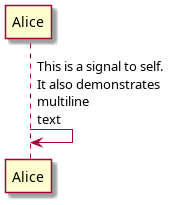 |
uml/reference_01-05-1_Arrow@startuml Bob ->x Alice Bob -> Alice Bob ->> Alice Bob -\ Alice Bob \\- Alice Bob //-- Alice Bob ->o Alice Bob o\\-- Alice Bob <-> Alice Bob <->o Alice @enduml | 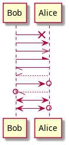 |
uml/reference_01-06-1@startuml Bob -[#red]> Alice : hello Alice -[#0000FF]->Bob : ok @enduml | 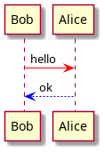 |
uml/reference_01-07-1@startuml autonumber Bob -> Alice : Authentication Request Bob <- Alice : Authentication Response @enduml | 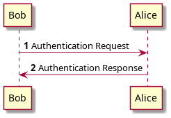 |
uml/reference_01-07-2@startuml autonumber Bob -> Alice : Authentication Request Bob <- Alice : Authentication Response autonumber 15 Bob -> Alice : Another authentication Request Bob <- Alice : Another authentication Response autonumber 40 10 Bob -> Alice : Yet another authentication Request Bob <- Alice : Yet another authentication Response @enduml | 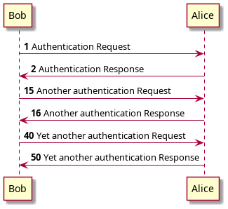 |
uml/reference_01-07-3@startuml autonumber "<b>[000]" Bob -> Alice : Authentication Request Bob <- Alice : Authentication Response autonumber 15 "<b>(<u>##</u>)" Bob -> Alice : Another authentication Request Bob <- Alice : Another authentication Response autonumber 40 10 "<font color=red><b>Message 0 " Bob -> Alice : Yet another authentication Request Bob <- Alice : Yet another authentication Response @enduml | 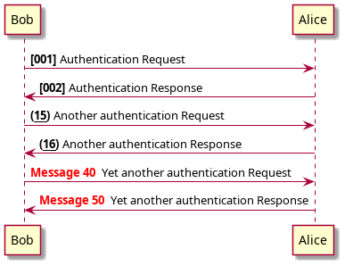 |
uml/reference_01-07-4@startuml autonumber 10 10 "<b>[000]" Bob -> Alice : Authentication Request Bob <- Alice : Authentication Response autonumber stop Bob -> Alice : dummy autonumber resume "<font color=red><b>Message 0 " Bob -> Alice : Yet another authentication Request Bob <- Alice : Yet another authentication Response autonumber stop Bob -> Alice : dummy autonumber resume 1 "<font color=blue><b>Message 0 " Bob -> Alice : Yet another authentication Request Bob <- Alice : Yet another authentication Response @enduml | 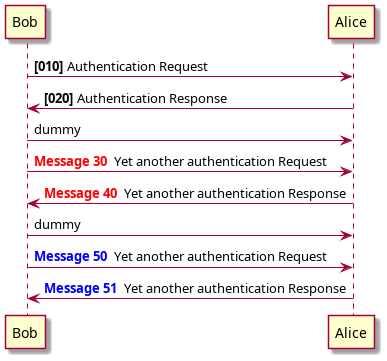 |
uml/reference_01-08-1@startuml Alice -> Bob : message 1 Alice -> Bob : message 2 newpage Alice -> Bob : message 3 Alice -> Bob : message 4 newpage A title for the\nlast page Alice -> Bob : message 5 Alice -> Bob : message 6 @enduml | 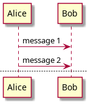 |
uml/reference_01-09-1@startuml Alice -> Bob: Authentication Request alt successful case Bob -> Alice: Authentication Accepted else some kind of failure Bob -> Alice: Authentication Failure group My own label Alice -> Log : Log attack start loop 1000 times Alice -> Bob: DNS Attack end Alice -> Log : Log attack end end else Another type of failure Bob -> Alice: Please repeat end @enduml | 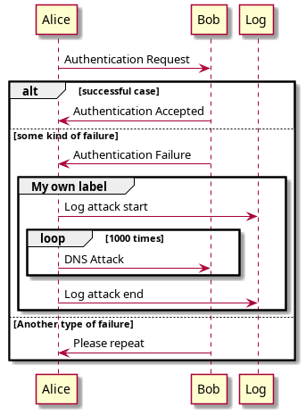 |
uml/reference_01-10-1@startuml Alice->Bob : hello note left: this is a first note Bob->Alice : ok note right: this is another note Bob->Bob : I am thinking note left a note can also be defined on several lines end note @enduml | 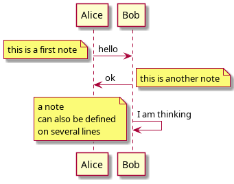 |
uml/reference_01-11-1_Note@startuml participant Alice participant Bob note left of Alice #FFAAAA This is displayed left of Alice. end note note right of Alice: This is displayed right of Alice. note over Alice: This is displayed over Alice. note over Alice, Bob #FFAAAA: This is displayed\n over Bob and Alice. rnote over Bob, Alice This is yet another example of a long note. end rnote @enduml |
uml/reference_01-12-1@startuml caller -> server : conReq hnote over caller : idle caller <- server : conConf rnote over server "r" as rectangle "h" as hexagon endrnote @enduml | 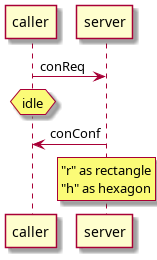 |
uml/reference_01-13-1@startuml participant Alice participant "The **Famous** Bob" as Bob Alice -> Bob : hello --there-- ... Some ~~long delay~~ ... Bob -> Alice : ok note left This is **bold** This is //italics// This is ""monospaced"" This is --stroked-- This is __underlined__ This is ~~waved~~ end note Alice -> Bob : A //well formatted// message note right of Alice This is <back:cadetblue><size:18>displayed</size></back> __left of__ Alice. end note note left of Bob <u:red>This</u> is <color #118888>displayed</color> **<color purple>left of</color> <s:red>Alice</strike> Bob**. end note note over Alice, Bob <w:#FF33FF>This is hosted</w> by <img sourceforge.jpg> end note @enduml |
uml/reference_01-14-1@startuml == Initialization == Alice -> Bob: Authentication Request Bob --> Alice: Authentication Response == Repetition == Alice -> Bob: Another authentication Request Alice <-- Bob: another authentication Response @enduml |
uml/reference_01-15-1_Reference@startuml participant Alice actor Bob ref over Alice, Bob : init Alice -> Bob : hello ref over Bob This can be on several lines end ref @enduml |
uml/reference_01-16-1_Delay@startuml Alice -> Bob: Authentication Request ... Bob --> Alice: Authentication Response ...5 minutes latter... Bob --> Alice: Bye ! @enduml |
|
uml/reference_01-17-1_Space@startuml Alice -> Bob: message 1 Bob --> Alice: ok ||| Alice -> Bob: message 2 Bob --> Alice: ok ||45|| Alice -> Bob: message 3 Bob --> Alice: ok @enduml | 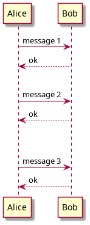 |
uml/reference_01-18-1_lifeline@startuml participant User User -> A: DoWork activate A A -> B: << createRequest >> activate B B -> C: DoWork activate C C --> B: WorkDone destroy C B --> A: RequestCreated deactivate B A -> User: Done deactivate A @enduml | 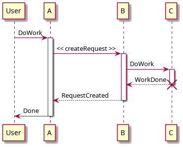 |
uml/reference_01-18-2_lifeline@startuml participant User User -> A: DoWork activate A #FFBBBB A -> A: Internal call activate A #DarkSalmon A -> B: << createRequest >> activate B B --> A: RequestCreated deactivate B deactivate A A -> User: Done deactivate A @endum | 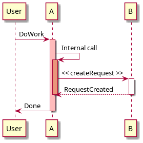 |
uml/reference_01-19-1@startuml Bob -> Alice : hello create Other Alice -> Other : new create control String Alice -> String note right : You can also put notes! Alice --> Bob : ok @enduml |
uml/reference_01-20-1@startuml [-> A: DoWork activate A A -> A: Internal call activate A A ->] : << createRequest >> A<--] : RequestCreated deactivate A [<- A: Done deactivate A @enduml | 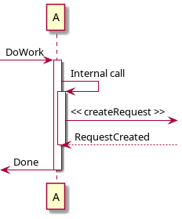 |
uml/reference_01-20-2@startuml [-> Bob [o-> Bob [o->o Bob [x-> Bob [<- Bob [x<- Bob Bob ->] Bob ->o] Bob o->o] Bob ->x] Bob <-] Bob x<-] @enduml |
uml/reference_01-21-1@startuml participant "Famous Bob" as Bob << Generated >> participant Alice << (C,#ADD1B2) Testable >> Bob->Alice: First message @enduml |
uml/reference_01-21-2@startuml skinparam guillemet false participant "Famous Bob" as Bob << Generated >> participant Alice << (C,#ADD1B2) Testable >> Bob->Alice: First message @enduml |
uml/reference_01-21-3@startuml participant Bob << (C,#ADD1B2) >> participant Alice << (C,#ADD1B2) >> Bob->Alice: First message @enduml |
uml/reference_01-22-1@startuml title __Simple__ **communication** example Alice -> Bob: Authentication Request Bob -> Alice: Authentication Response @enduml |
uml/reference_01-22-2@startuml title __Simple__ communication example\non several lines Alice -> Bob: Authentication Request Bob -> Alice: Authentication Response @enduml |
uml/reference_01-22-3@startuml title <u>Simple</u> communication example on <i>several</i> lines and using <font color=red>html</font> This is hosted by <img:sourceforge.jpg> end title Alice -> Bob: Authentication Request Bob -> Alice: Authentication Response @enduml |
uml/reference_01-23-1@startuml box "Internal Service" #LightBlue participant Bob participant Alice end box participant Other Bob -> Alice : hello Alice -> Other : hello @enduml |
uml/reference_01-24-1@startuml hide footbox title Footer removed Alice -> Bob: Authentication Request Bob --> Alice: Authentication Response @enduml |
uml/reference_01-25-1@startuml skinparam sequenceArrowThickness 3 skinparam roundcorner 20 skinparam maxmessagesize 60 skinparam sequenceParticipant underline actor User participant "First Class" as A participant "Second Class" as B participant "Last Class" as C User -> A: DoWork activate A A -> B: Create Request activate B B -> C: DoWork activate C C --> B: WorkDone destroy C B --> A: Request Created deactivate B A --> User: Done deactivate A @enduml |
uml/reference_01-25-2@startuml skinparam backgroundColor #EEEBDC skinparam handwritten true skinparam sequence { ArrowColor DeepSkyBlue ActorBorderColor DeepSkyBlue LifeLineBorderColor blue LifeLineBackgroundColor #A9DCDF ParticipantBorderColor DeepSkyBlue ParticipantBackgroundColor DodgerBlue ParticipantFontName Impact ParticipantFontSize 17 ParticipantFontColor #A9DCDF ActorBackgroundColor aqua ActorFontColor DeepSkyBlue ActorFontSize 17 ActorFontName Aapex } actor User participant "First Class" as A participant "Second Class" as B participant "Last Class" as C User -> A: DoWork activate A A -> B: Create Request activate B B -> C: DoWork activate C C --> B: WorkDone destroy C B --> A: Request Created deactivate B A --> User: Done deactivate A @enduml |
uml/reference_01-26-1_Changing_padding@startuml skinparam ParticipantPadding 20 skinparam BoxPadding 10 box "Foo1" participant Alice1 participant Alice2 end box box "Foo2" participant Bob1 participant Bob2 end box Alice1 -> Bob1 : hello Alice1 -> Out : out @enduml |
uml/reference_02-01-1@startuml (First usecase) (Another usecase) as (UC2) usecase UC3 usecase (Last\nusecase) as UC4 @enduml |
uml/reference_02-02-1@startuml :First Actor: :Another\nactor: as Men2 actor Men3 actor :Last actor: as Men4 @enduml |
uml/reference_02-03-1@startuml usecase UC1 as "You can use several lines to define your usecase. You can also use separators. -- Several separators are possible. == And you can add titles: ..Conclusion.. This allows large description." @enduml |
uml/reference_02-04-1@startuml User -> (Start) User --> (Use the application) : A small label :Main Admin: ---> (Use the application) : This is\nyet another\nlabel @enduml |
uml/reference_02-05-1@startuml :Main Admin: as Admin (Use the application) as (Use) User <|-- Admin (Start) <|-- (Use) @enduml |
uml/reference_02-06-1@startuml :Main Admin: as Admin (Use the application) as (Use) User -> (Start) User --> (Use) Admin ---> (Use) note right of Admin : This is an example. note right of (Use) A note can also be on several lines end note note "This note is connected\nto several objects." as N2 (Start) .. N2 N2 .. (Use) @enduml |
uml/reference_02-07-1@startuml User << Human >> :Main Database: as MySql << Application >> (Start) << One Shot >> (Use the application) as (Use) << Main >> User -> (Start) User --> (Use) MySql --> (Use) @enduml |
uml/reference_02-08-1@startuml :user: --> (Use case 1) :user: -> (Use case 2) @enduml |
uml/reference_02-08-2@startuml (Use case 1) <.. :user: (Use case 2) <- :user: @enduml |
uml/reference_02-08-3@startuml :user: -left-> (dummyLeft) :user: -right-> (dummyRight) :user: -up-> (dummyUp) :user: -down-> (dummyDown) @enduml |
uml/reference_02-09-1@startuml :actor1: --> (Usecase1) newpage :actor2: --> (Usecase2) @enduml |
uml/reference_02-10-1@startuml 'default top to bottom direction user1 --> (Usecase 1) user2 --> (Usecase 2) @enduml |
uml/reference_02-10-2@startuml left to right direction user1 --> (Usecase 1) user2 --> (Usecase 2) @enduml |
uml/reference_02-11-1@startuml skinparam handwritten true skinparam usecase { BackgroundColor DarkSeaGreen BorderColor DarkSlateGray BackgroundColor<< Main >> YellowGreen BorderColor<< Main >> YellowGreen ArrowColor Olive ActorBorderColor black ActorFontName Courier ActorBackgroundColor<< Human >> Gold } User << Human >> :Main Database: as MySql << Application >> (Start) << One Shot >> (Use the application) as (Use) << Main >> User -> (Start) User --> (Use) MySql --> (Use) @enduml |
uml/reference_02-12-1@startuml left to right direction skinparam packageStyle rectangle actor customer actor clerk rectangle checkout { customer -- (checkout) (checkout) .> (payment) : include (help) .> (checkout) : extends (checkout) -- clerk } @enduml |
uml/reference_03-01-1_Class@startuml Class01 <|-- Class02 Class03 *-- Class04 Class05 o-- Class06 Class07 .. Class08 Class09 -- Class10 @enduml |
uml/reference_03-01-2_Class@startuml Class11 <|.. Class12 Class13 --> Class14 Class15 ..> Class16 Class17 ..|> Class18 Class19 <--* Class20 @enduml |
uml/reference_03-01-3_Class@startuml Class21 #-- Class22 Class23 x-- Class24 Class25 }-- Class26 Class27 +-- Class28 Class29 ^-- Class30 @enduml | 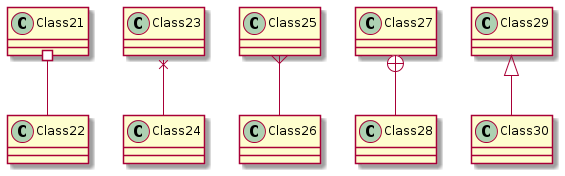 |
uml/reference_03-02-1_Class@startuml Class01 "1" *-- "many" Class02 : contains Class03 o-- Class04 : aggregation Class05 --> "1" Class06 @enduml |
uml/reference_03-02-2_Class@startuml class Car Driver - Car : drives > Car *- Wheel : have 4 > Car -- Person : < owns @enduml |
uml/reference_03-03-1_Class@startuml Object <|-- ArrayList Object : equals() ArrayList : Object[] elementData ArrayList : size() @enduml |
uml/reference_03-03-2_Class@startuml class Dummy { String data void methods() } class Flight { flightNumber : Integer departureTime : Date } @enduml |
uml/reference_03-04-1_Class@startuml class Dummy { -field1 #field2 ~method1() +method2() } @enduml |
uml/reference_03-04-2_Class@startuml skinparam classAttributeIconSize 0 class Dummy { -field1 #field2 ~method1() +method2() } @enduml |
uml/reference_03-05-1@startuml class Dummy { {static} String id {abstract} void methods() } @enduml |
uml/reference_03-06-1_Class@startuml class Foo1 { You can use several lines .. as you want and group == things together. __ You can have as many groups as you want -- End of class } class User { .. Simple Getter .. + getName() + getAddress() .. Some setter .. + setName() __ private data __ int age -- encrypted -- String password } @enduml |
uml/reference_03-07-1_note@startuml class Object << general >> Object <|--- ArrayList note top of Object : In java, every class\nextends this one. note "This is a floating note" as N1 note "This note is connected\nto several objects." as N2 Object .. N2 N2 .. ArrayList class Foo note left: On last defined class @enduml |
uml/reference_03-08-1_Note_as@startuml class Foo note left: On last defined class note top of Object In java, <size:18>every</size> <u>class</u> <b>extends</b> <i>this</i> one. end note note as N1 This note is <u>also</u> <b><color:royalBlue>on several</color> <s>words</s> lines And this is hosted by <img:sourceforge.jpg> end note @enduml |
uml/reference_03-09-1_Note_on_links@startuml class Dummy Dummy --> Foo : A link note on link #red: note that is red Dummy --> Foo2 : Another link note right on link #blue this is my note on right link and in blue end note @enduml |
uml/reference_03-10-1@startuml abstract class AbstractList abstract AbstractCollection interface List interface Collection List <|-- AbstractList Collection <|-- AbstractCollection Collection <|- List AbstractCollection <|- AbstractList AbstractList <|-- ArrayList class ArrayList { Object[] elementData size() } enum TimeUnit { DAYS HOURS MINUTES } annotation SuppressWarnings @enduml |
uml/reference_03-11-1@startuml class "This is my class" as class1 class class2 as "It works this way too" class2 *-- "foo/dummy" : use @enduml |
uml/reference_03-12-1@startuml class Dummy1 { +myMethods() } class Dummy2 { +hiddenMethod() } class Dummy3 <<Serializable>> { String name } hide members hide <<Serializable>> circle show Dummy1 methods show <<Serializable>> fields @enduml |
uml/reference_03-13-1@startuml class Foo1 class Foo2 Foo2 *-- Foo1 hide Foo2 @enduml |
uml/reference_03-14-1_Class@startuml class Foo<? extends Element> { int size() } Foo *- Element @enduml |
uml/reference_03-14-1@startuml class Foo<? extends Element> { int size() } Foo *- Element @enduml |

|
uml/reference_03-15-1@startuml class System << (S,#FF7700) Singleton >> class Date << (D,orchid) >> @enduml |
uml/reference_03-16-1@startuml package "Classic Collections" #DDDDDD { Object <|-- ArrayList } package net.sourceforge.plantuml { Object <|-- Demo1 Demo1 *- Demo2 } @enduml |
uml/reference_03-17-1@startuml scale 750 width package foo1 <<Node>> { class Class1 } package foo2 <<Rectangle>> { class Class2 } package foo3 <<Folder>> { class Class3 } package foo4 <<Frame>> { class Class4 } package foo5 <<Cloud>> { class Class5 } package foo6 <<Database>> { class Class6 } @enduml |
uml/reference_03-18-1@startuml class BaseClass namespace net.dummy #DDDDDD { .BaseClass <|-- Person Meeting o-- Person .BaseClass <|- Meeting } namespace net.foo { net.dummy.Person <|- Person .BaseClass <|-- Person net.dummy.Meeting o-- Person } BaseClass <|-- net.unused.Person @enduml |
uml/reference_03-19-1@startuml set namespaceSeparator :: class X1::X2::foo { some info } @enduml |
uml/reference_03-19-2@startuml set namespaceSeparator none class X1.X2.foo { some info } @enduml |
uml/reference_03-20-1@startuml class foo bar ()- foo @enduml |
uml/reference_03-21-1@startuml Room o- Student Room *-- Chair @enduml | 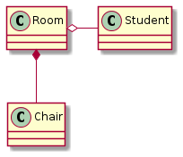 |
uml/reference_03-21-2@startuml Student -o Room Chair --* Room @enduml |
uml/reference_03-21-3@startuml foo -left-> dummyLeft foo -right-> dummyRight foo -up-> dummyUp foo -down-> dummyDown @enduml |
uml/reference_03-22-1@startuml class Student { Name } Student "0..*" - "1..*" Course (Student, Course) .. Enrollment class Enrollment { drop() cancel() } @enduml |
uml/reference_03-22-2@startuml class Student { Name } Student "0..*" -- "1..*" Course (Student, Course) . Enrollment class Enrollment { drop() cancel() } @enduml |
uml/reference_03-23-1@startuml skinparam class { BackgroundColor PaleGreen ArrowColor SeaGreen BorderColor SpringGreen } skinparam stereotypeCBackgroundColor YellowGreen Class01 "1" *-- "many" Class02 : contains Class03 o-- Class04 : aggregation @enduml |
uml/reference_03-24-1@startuml skinparam class { BackgroundColor PaleGreen ArrowColor SeaGreen BorderColor SpringGreen BackgroundColor<<Foo>> Wheat BorderColor<<Foo>> Tomato } skinparam stereotypeCBackgroundColor YellowGreen skinparam stereotypeCBackgroundColor<< Foo >> DimGray Class01 <<Foo>> Class03 <<Foo>> Class01 "1" *-- "many" Class02 : contains Class03 o-- Class04 : aggregation @enduml |

|
uml/reference_03-25-1@startuml skinparam backgroundcolor AntiqueWhite/Gold skinparam classBackgroundColor Wheat|CornflowerBlue class Foo #red-green note left of Foo #blue\9932CC this is my note on this class end note package example #GreenYellow/LightGoldenRodYellow { class Dummy } @enduml |
uml/reference_03-26-1@startuml class Bar1 class Bar2 together { class Together1 class Together2 class Together3 } Together1 - Together2 Together2 - Together3 Together2 -[hidden]--> Bar1 Bar1 -[hidden]> Bar2 @enduml |
uml/reference_03-27-1@startuml ' Split into 4 pages page 2x2 skinparam pageMargin 10 skinparam pageExternalColor gray skinparam pageBorderColor black class BaseClass namespace net.dummy #DDDDDD { .BaseClass <|-- Person Meeting o-- Person .BaseClass <|- Meeting } namespace net.foo { net.dummy.Person <|- Person .BaseClass <|-- Person net.dummy.Meeting o-- Person } BaseClass <|-- net.unused.Person @enduml | 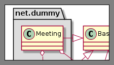 |
uml/reference_04-01-1@startuml (*) --> "First Activity" "First Activity" --> (*) @enduml |
uml/reference_04-02-1@startuml (*) --> "First Activity" -->[You can put also labels] "Second Activity" --> (*) @enduml |
uml/reference_04-03-1@startuml (*) -up-> "First Activity" -right-> "Second Activity" --> "Third Activity" -left-> (*) @enduml |
uml/reference_04-04-1@startuml (*) --> "Initialization" if "Some Test" then -->[true] "Some Activity" --> "Another activity" -right-> (*) else ->[false] "Something else" -->[Ending process] (*) endif @enduml |
uml/reference_04-04-2@startuml (*) --> "check input" If "input is verbose" then --> [Yes] "turn on verbosity" --> "run command" else --> "run command" Endif -->(*) @enduml |
uml/reference_04-05-1@startuml (*) --> if "Some Test" then -->[true] "activity 1" if "" then -> "activity 3" as a3 else if "Other test" then -left-> "activity 5" else --> "activity 6" endif endif else ->[false] "activity 2" endif a3 --> if "last test" then --> "activity 7" else -> "activity 8" endif @enduml |
uml/reference_04-06-1@startuml (*) --> ===B1=== --> "Parallel Activity 1" --> ===B2=== ===B1=== --> "Parallel Activity 2" --> ===B2=== --> (*) @enduml |
uml/reference_04-07-1@startuml (*) -left-> "this <size:20>activity</size> is <b>very</b> <color:red>long2</color> and defined on several lines that contains many <i>text</i>" as A1 -up-> "Another activity\n on several lines" A1 --> "Short activity <img:sourceforge.jpg>" @enduml |
uml/reference_04-08-1@startuml (*) --> "Some Activity" note right: This activity has to be defined "Some Activity" --> (*) note left This note is on several lines end note @enduml |
uml/reference_04-09-1@startuml partition Conductor { (*) --> "Climbs on Platform" --> === S1 === --> Bows } partition Audience #LightSkyBlue { === S1 === --> Applauds } partition Conductor { Bows --> === S2 === --> WavesArmes Applauds --> === S2 === } partition Orchestra #CCCCEE { WavesArmes --> Introduction --> "Play music" } @enduml |
uml/reference_04-10-1@startuml skinparam backgroundColor #AAFFFF skinparam activity { StartColor red BarColor SaddleBrown EndColor Silver BackgroundColor Peru BackgroundColor<< Begin >> Olive BorderColor Peru FontName Impact } (*) --> "Climbs on Platform" << Begin >> --> === S1 === --> Bows --> === S2 === --> WavesArmes --> (*) @enduml |
uml/reference_04-11-1@startuml 'Default is skinparam activityShape roundBox skinparam activityShape octagon (*) --> "First Activity" "First Activity" --> (*) @enduml |
uml/reference_04-12-1@startuml title Servlet Container (*) --> "ClickServlet.handleRequest()" --> "new Page" if "Page.onSecurityCheck" then ->[true] "Page.onInit()" if "isForward?" then ->[no] "Process controls" if "continue processing?" then -->[yes] ===RENDERING=== else -->[no] ===REDIRECT_CHECK=== endif else -->[yes] ===RENDERING=== endif if "is Post?" then -->[yes] "Page.onPost()" --> "Page.onRender()" as render --> ===REDIRECT_CHECK=== else -->[no] "Page.onGet()" --> render endif else -->[false] ===REDIRECT_CHECK=== endif if "Do redirect?" then ->[yes] "redirect request" --> ==BEFORE_DESTROY=== else if "Do Forward?" then -left->[yes] "Forward request" --> ==BEFORE_DESTROY=== else -right->[no] "Render page template" --> ==BEFORE_DESTROY=== endif endif --> "Page.onDestroy()" -->(*) @enduml |
uml/reference_05-01-1@startuml :Hello world; :This is on defined on several **lines**; @enduml |
uml/reference_05-02-1@startuml start :Hello world; :This is on defined on several **lines**; stop @enduml |
uml/reference_05-02-2@startuml start :Hello world; :This is on defined on several **lines**; end @enduml |
uml/reference_05-03-1@startuml start if (Graphviz installed?) then (yes) :process all\ndiagrams; else (no) :process only __sequence__ and __activity__ diagrams; endif stop @enduml |
uml/reference_05-03-2@startuml start if (condition A) then (yes) :Text 1; elseif (condition B) then (yes) :Text 2; stop elseif (condition C) then (yes) :Text 3; elseif (condition D) then (yes) :Text 4; else (nothing) :Text else; endif stop @enduml | 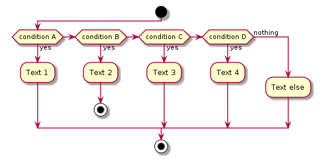 |
uml/reference_05-04-1@startuml start repeat :read data; :generate diagrams; repeat while (more data?) stop @enduml |
uml/reference_05-05-1@startuml start while (data available?) :read data; :generate diagrams; endwhile stop @enduml |
uml/reference_05-05-2@startuml while (check filesize ?) is (not empty) :read file; endwhile (empty) :close file; @enduml |
uml/reference_05-06-1@startuml start if (multiprocessor?) then (yes) fork :Treatment 1; fork again :Treatment 2; end fork else (monoproc) :Treatment 1; :Treatment 2; endif @enduml |
uml/reference_05-07-1@startuml start :foo1; floating note left: This is a note :foo2; note right This note is on several //lines// and can contain <b>HTML</b> ==== * Calling the method ""foo()"" is prohibited end note stop @enduml |
uml/reference_05-08-1@startuml start :starting progress; #HotPink:reading configuration files These files should edited at this point!; #AAAAAA:ending of the process; @enduml |
uml/reference_05-09-1@startuml :foo1; -> You can put text on arrows; if (test) then -[#blue]-> :foo2; -[#green,dashed]-> The text can also be on several lines and **very** long...; :foo3; else -[#black,dotted]-> :foo4; endif -[#gray,bold]-> :foo5; @enduml |
uml/reference_05-10-1_Connector@startuml start :Some activity; (A) detach (A) :Other activity; @enduml |
uml/reference_05-11-1_Grouping@startuml start partition Initialization { :read config file; :init internal variable; } partition Running { :wait for user interaction; :print information; } stop @enduml |
uml/reference_05-12-1_Swimlanes@startuml |Swimlane1| start :foo1; |#AntiqueWhite|Swimlane2| :foo2; :foo3; |Swimlane1| :foo4; |Swimlane2| :foo5; stop @enduml |
uml/reference_05-13-1_Detach@startuml :start; fork :foo1; :foo2; fork again :foo3; detach endfork if (foo4) then :foo5; detach endif :foo6; detach :foo7; stop @enduml |
uml/reference_05-14-1_SDL@startuml :Ready; :next(o)| :Receiving; split :nak(i)< :ack(o)> split again :ack(i)< :next(o) on several line| :i := i + 1] :ack(o)> split again :err(i)< :nak(o)> split again :foo/ split again :i > 5} stop end split :finish; @enduml |
uml/reference_05-15-1_Complete_example@startuml start :ClickServlet.handleRequest(); :new page; if (Page.onSecurityCheck) then (true) :Page.onInit(); if (isForward?) then (no) :Process controls; if (continue processing?) then (no) stop endif if (isPost?) then (yes) :Page.onPost(); else (no) :Page.onGet(); endif :Page.onRender(); endif else (false) endif if (do redirect?) then (yes) :redirect process; else if (do forward?) then (yes) :Forward request; else (no) :Render page template; endif endif stop @enduml |
uml/reference_06-01-1@startuml [First component] [Another component] as Comp2 component Comp3 component [Last\ncomponent] as Comp4 @enduml |
uml/reference_06-02-1@startuml () "First Interface" () "Another interface" as Interf2 interface Interf3 interface "Last\ninterface" as Interf4 @enduml |
uml/reference_06-03-1@startuml DataAccess - [First Component] [First Component] ..> HTTP : use @enduml |
uml/reference_06-04-1@startuml interface "Data Access" as DA DA - [First Component] [First Component] ..> HTTP : use note left of HTTP : Web Service only note right of [First Component] A note can also be on several lines end note @enduml |
uml/reference_06-05-1@startuml package "Some Group" { HTTP - [First Component] [Another Component] } node "Other Groups" { FTP - [Second Component] [First Component] --> FTP } cloud { [Example 1] } database "MySql" { folder "This is my folder" { [Folder 3] } frame "Foo" { [Frame 4] } } [Another Component] --> [Example 1] [Example 1] --> [Folder 3] [Folder 3] --> [Frame 4] @enduml |
uml/reference_06-06-1@startuml [Component] --> Interface1 [Component] -> Interface2 @enduml |
uml/reference_06-06-2@startuml Interface1 <-- [Component] Interface2 <- [Component] @enduml |
uml/reference_06-06-3@startuml [Component] -left-> left [Component] -right-> right [Component] -up-> up [Component] -down-> down @enduml |
uml/reference_06-07-1@startuml skinparam componentStyle uml2 interface "Data Access" as DA DA - [First Component] [First Component] ..> HTTP : use @enduml |
uml/reference_06-08_Long_description@startuml component comp1 [ This component has a long comment on several lines ] @enduml |
uml/reference_06-09-1@startuml component [Web Server] #Yellow @enduml |
uml/reference_06-10-1@startuml sprite $businessProcess [16x16/16] { FFFFFFFFFFFFFFFF FFFFFFFFFFFFFFFF FFFFFFFFFFFFFFFF FFFFFFFFFFFFFFFF FFFFFFFFFF0FFFFF FFFFFFFFFF00FFFF FF00000000000FFF FF000000000000FF FF00000000000FFF FFFFFFFFFF00FFFF FFFFFFFFFF0FFFFF FFFFFFFFFFFFFFFF FFFFFFFFFFFFFFFF FFFFFFFFFFFFFFFF FFFFFFFFFFFFFFFF FFFFFFFFFFFFFFFF } rectangle " End to End\nbusiness process" <<$businessProcess>> { rectangle "inner process 1" <<$businessProcess>> as src rectangle "inner process 2" <<$businessProcess>> as tgt src -> tgt } @enduml |
uml/reference_06-11-1@startuml skinparam interface { backgroundColor RosyBrown borderColor orange } skinparam component { FontSize 13 BackgroundColor<<Apache>> Red BorderColor<<Apache>> #FF6655 FontName Courier BorderColor black BackgroundColor gold ArrowFontName Impact ArrowColor #FF6655 ArrowFontColor #777777 } () "Data Access" as DA DA - [First Component] [First Component] ..> () HTTP : use HTTP - [Web Server] << Apache >> @enduml |
uml/reference_06-11-2@startuml [AA] <<static lib>> [BB] <<shared lib>> [CC] <<static lib>> node node1 node node2 <<shared node>> database Production skinparam component { backgroundColor<<static lib>> DarkKhaki backgroundColor<<shared lib>> Green } skinparam node { borderColor Green backgroundColor Yellow backgroundColor<<shared node>> Magenta } skinparam databaseBackgroundColor Aqua @enduml |
uml/reference_07-01-1_Simple_State@startuml [*] --> State1 State1 --> [*] State1 : this is a string State1 : this is another string State1 -> State2 State2 --> [*] @enduml |
uml/reference_07-02-1_Change_state_rendering@startuml hide empty description [*] --> State1 State1 --> [*] State1 : this is a string State1 : this is another string State1 -> State2 State2 --> [*] @enduml |
uml/reference_07-03-1_Composite_state@startuml scale 350 width [*] --> NotShooting state NotShooting { [*] --> Idle Idle --> Configuring : EvConfig Configuring --> Idle : EvConfig } state Configuring { [*] --> NewValueSelection NewValueSelection --> NewValuePreview : EvNewValue NewValuePreview --> NewValueSelection : EvNewValueRejected NewValuePreview --> NewValueSelection : EvNewValueSaved state NewValuePreview { State1 -> State2 } } @enduml |
uml/reference_07-04-1_Long_name@startuml scale 600 width [*] -> State1 State1 --> State2 : Succeeded State1 --> [*] : Aborted State2 --> State3 : Succeeded State2 --> [*] : Aborted state State3 { state "Accumulate Enough Data\nLong State Name" as long1 long1 : Just a test [*] --> long1 long1 --> long1 : New Data long1 --> ProcessData : Enough Data } State3 --> State3 : Failed State3 --> [*] : Succeeded / Save Result State3 --> [*] : Aborted @enduml |
uml/reference_07-05-1_Fork@startuml state fork_state <<fork>> [*] --> fork_state fork_state --> State2 fork_state --> State3 state join_state <<join>> State2 --> join_state State3 --> join_state join_state --> State4 State4 --> [*] @enduml |
uml/reference_07-06-1_Concurrent_state@startuml [*] --> Active state Active { [*] -> NumLockOff NumLockOff --> NumLockOn : EvNumLockPressed NumLockOn --> NumLockOff : EvNumLockPressed -- [*] -> CapsLockOff CapsLockOff --> CapsLockOn : EvCapsLockPressed CapsLockOn --> CapsLockOff : EvCapsLockPressed -- [*] -> ScrollLockOff ScrollLockOff --> ScrollLockOn : EvCapsLockPressed ScrollLockOn --> ScrollLockOff : EvCapsLockPressed } @enduml |
uml/reference_07-07-1_Arrow_direction@startuml [*] -up-> First First -right-> Second Second --> Third Third -left-> Last @enduml |
uml/reference_07-08-1_Note@startuml [*] --> Active Active --> Inactive note left of Active : this is a short\nnote note right of Inactive A note can also be defined on several lines end note @enduml |
uml/reference_07-08-2_Note@startuml state foo note "This is a floating note" as N1 @enduml |
uml/reference_07-09-1_More_in_notes@startuml [*] --> NotShooting state "Not Shooting State" as NotShooting { state "Idle mode" as Idle state "Configuring mode" as Configuring [*] --> Idle Idle --> Configuring : EvConfig Configuring --> Idle : EvConfig } note right of NotShooting : This is a note on a composite state @enduml |
uml/reference_07-10-1_Skinparam@startuml skinparam backgroundColor LightYellow skinparam state { StartColor MediumBlue EndColor Red BackgroundColor Peru BackgroundColor<<Warning>> Olive BorderColor Gray FontName Impact } [*] --> NotShooting state "Not Shooting State" as NotShooting { state "Idle mode" as Idle <<Warning>> state "Configuring mode" as Configuring [*] --> Idle Idle --> Configuring : EvConfig Configuring --> Idle : EvConfig } NotShooting --> [*] @enduml |
uml/reference_08-01-1@startuml object firstObject object "My Second Object" as o2 @enduml | 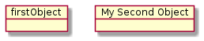 |
uml/reference_08-02-1@startuml object Object01 object Object02 object Object03 object Object04 object Object05 object Object06 object Object07 object Object08 Object01 <|-- Object02 Object03 *-- Object04 Object05 o-- "4" Object06 Object07 .. Object08 : some labels @enduml |
uml/reference_08-03-1@startuml object user { name = "Dummy" id = 123 } @enduml |
uml/reference_09-01-1@startuml robust "Web Browser" as WB concise "Web User" as WU @0 WU is Idle WB is Idle @100 WU is Waiting WB is Processing @300 WB is Waiting @enduml |
uml/reference_09-02-1@startuml robust "Web Browser" as WB concise "Web User" as WU @0 WU is Idle WB is Idle @100 WU -> WB : URL WU is Waiting WB is Processing @300 WB is Waiting @enduml | 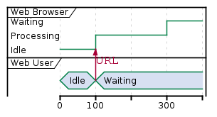 |
uml/reference_09-03-1@startuml robust "DNS Resolver" as DNS robust "Web Browser" as WB concise "Web User" as WU @0 WU is Idle WB is Idle DNS is Idle @+100 WU -> WB : URL WU is Waiting WB is Processing @+200 WB is Waiting WB -> DNS@+50 : Resolve URL @+100 DNS is Processing @+300 DNS is Idle @enduml | 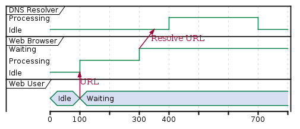 |
uml/reference_09-04-1@startuml robust "Web Browser" as WB concise "Web User" as WU @WB 0 is idle +200 is Proc. +100 is Waiting @WU 0 is Waiting +500 is ok @enduml |
uml/reference_09-05-1@startuml concise "Web User" as WU scale 100 as 50 pixels @WU 0 is Waiting +500 is ok @enduml |
uml/reference_09-06-1@startuml robust "Web Browser" as WB concise "Web User" as WU WB is Initializing WU is Absent @WB 0 is idle +200 is Processing +100 is Waiting @WU 0 is Waiting +500 is ok @enduml |
uml/reference_09-07-1@startuml robust "Signal1" as S1 robust "Signal2" as S2 S1 has 0,1,2,hello S2 has 0,1,2 @0 S1 is 0 S2 is 0 @100 S1 is {0,1} #SlateGrey S2 is {0,1} @200 S1 is 1 S2 is 0 @300 S1 is hello S2 is {0,2} @enduml |
uml/reference_09-08-1@startuml concise "Web User" as WU @0 WU is {-} @100 WU is A1 @200 WU is {-} @300 WU is {hidden} @400 WU is A3 @500 WU is {-} @enduml |
uml/reference_09-09-1@startuml robust "Web Browser" as WB concise "Web User" as WU WB is Initializing WU is Absent @WB 0 is idle +200 is Processing +100 is Waiting WB@0 <-> @50 : {50 ms lag} @WU 0 is Waiting +500 is ok @200 <-> @+150 : {150 ms} @enduml |
uml/reference_09-10-1@startuml Title this is my title header: some header footer: some footer legend Some legend end legend caption some caption robust "Web Browser" as WB concise "Web User" as WU @0 WU is Idle WB is Idle @100 WU is Waiting WB is Processing @300 WB is Waiting @enduml |
uml/reference_10-01-1@startgantt [Prototype design] lasts 15 days [Test prototype] lasts 10 days @endgantt |
uml/reference_10-02-1@startgantt [Prototype design] lasts 15 days [Test prototype] lasts 10 days [Test prototype] starts at [Prototype design]'s end @endgantt |
uml/reference_10-02-2@startgantt [Prototype design] lasts 10 days [Code prototype] lasts 10 days [Write tests] lasts 5 days [Code prototype] starts at [Prototype design]'s end [Write tests] starts at [Code prototype]'s start @endgantt |
uml/reference_10-03-1@startgantt [Prototype design] as [D] lasts 15 days [Test prototype] as [T] lasts 10 days [T] starts at [D]'s end @endgantt |
uml/reference_10-04-1@startgantt [Prototype design] lasts 13 days [Test prototype] lasts 4 days [Test prototype] starts at [Prototype design]'s end [Prototype design] is colored in Fuchsia/FireBrick [Test prototype] is colored in GreenYellow/Green @endgantt |
uml/reference_10-05-1@startgantt [Test prototype] lasts 10 days [Prototype completed] happens at [Test prototype]'s end [Setup assembly line] lasts 12 days [Setup assembly line] starts at [Test prototype]'s end @endgantt |
uml/reference_10-06-1@startgantt Project starts the 20th of september 2017 [Prototype design] as [TASK1] lasts 13 days [TASK1] is colored in Lavender/LightBlue @endgantt |
uml/reference_10-07-1@startgantt project starts the 2018/04/09 saturday are closed sunday are closed 2018/05/01 is closed 2018/04/17 to 2018/04/19 is closed [Prototype design] lasts 14 days [Test prototype] lasts 4 days [Test prototype] starts at [Prototype design]'s end [Prototype design] is colored in Fuchsia/FireBrick [Test prototype] is colored in GreenYellow/Green @endgantt |
uml/reference_10-08-1@startgantt [Prototype design] lasts 14 days [Build prototype] lasts 4 days [Prepare test] lasts 6 days [Prototype design] -> [Build prototype] [Prototype design] -> [Prepare test] @endgantt |
uml/reference_10-09-1@startgantt [Task1] lasts 10 days then [Task2] lasts 4 days -- Phase Two -- then [Task3] lasts 5 days then [Task4] lasts 6 days @endgantt |
uml/reference_10-10-1@startgantt [Task1] on {Alice} lasts 10 days [Task2] on {Bob:50%} lasts 2 days then [Task3] on {Alice:25%} lasts 1 days @endgantt |
uml/reference_10-11-1@startgantt [Prototype design] lasts 13 days and is colored in Lavender/LightBlue [Test prototype] lasts 9 days and is colored in Coral/Green and starts 3 days after [Prototype design]'s end [Write tests] lasts 5 days and ends at [Prototype design]'s end [Hire tests writers] lasts 6 days and ends at [Write tests]'s start [Init and write tests report] is colored in Coral/Green [Init and write tests report] starts 1 day before [Test prototype]'s start and ends at [Test prototype]'s end @endgantt |
uml/reference_11-01-1@startmindmap * Debian ** Ubuntu *** Linux Mint *** Kubuntu *** Lubuntu *** KDE Neon ** LMDE ** SolydXK ** SteamOS ** Raspbian with a very long name *** <s>Raspmbc</s> => OSMC *** <s>Raspyfi</s> => Volumio @endmindmap |
uml/reference_11-02-1@startmindmap * root node ** some first level node ***_ second level node ***_ another second level node ***_ foo ***_ bar ***_ foobar ** another first level node @endmindmap |
uml/reference_11-03-1@startmindmap + OS ++ Ubuntu +++ Linux Mint +++ Kubuntu +++ Lubuntu +++ KDE Neon ++ LMDE ++ SolydXK ++ SteamOS ++ Raspbian -- Windows 95 -- Windows 98 -- Windows NT --- Windows 8 --- Windows 10 @endmindmap |
uml/reference_11-04-1@startmindmap * root node * some first level node * second level node * another second level node * another first level node @endmindmap |
uml/reference_11-05-1@startmindmap * count ** 100 *** 101 *** 102 ** 200 left side ** A *** AA *** AB ** B @endmindmap |
uml/reference_11-06-1@startmindmap caption figure 1 title My super title * <&flag>Debian ** <&globe>Ubuntu *** Linux Mint *** Kubuntu *** Lubuntu *** KDE Neon ** <&graph>LMDE ** <&pulse>SolydXK ** <&people>SteamOS ** <&star>Raspbian with a very long name *** <s>Raspmbc</s> => OSMC *** <s>Raspyfi</s> => Volumio header My super header endheader center footer My super footer legend right Short legend endlegend @endmindmap |
uml/reference_12-01-1@startwbs * Business Process Modelling WBS ** Launch the project *** Complete Stakeholder Research *** Initial Implementation Plan ** Design phase *** Model of AsIs Processes Completed **** Model of AsIs Processes Completed1 **** Model of AsIs Processes Completed2 *** Measure AsIs performance metrics *** Identify Quick Wins ** Complete innovate phase @endwbs |
uml/reference_12-02-1@startwbs * Business Process Modelling WBS ** Launch the project *** Complete Stakeholder Research *** Initial Implementation Plan ** Design phase *** Model of AsIs Processes Completed ****< Model of AsIs Processes Completed1 ****> Model of AsIs Processes Completed2 ***< Measure AsIs performance metrics ***< Identify Quick Wins @endwbs | 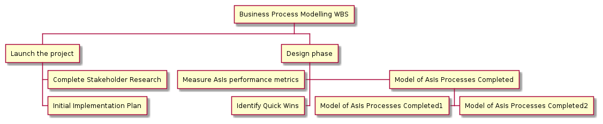 |
uml/reference_12-03-1@startwbs + New Job ++ Decide on Job Requirements +++ Identity gaps +++ Review JDs ++++ Sign-Up for courses ++++ Volunteer ++++ Reading ++- Checklist +++- Responsibilities +++- Location ++ CV Upload Done +++ CV Updated ++++ Spelling & Grammar ++++ Check dates ---- Skills +++ Recruitment sites chosen @endwbs |

|
uml/reference_12-04-1@startwbs + Project + Part One + Task 1.1 - LeftTask 1.2 + Task 1.3 + Part Two + Task 2.1 + Task 2.2 -_ Task 2.2.1 To the left boxless -_ Task 2.2.2 To the Left boxless +_ Task 2.2.3 To the right boxless @endwbs |
uml/reference_13-01-1@startuml :<math>int_0^1f(x)dx</math>; :<math>x^2+y_1+z_12^34</math>; note right Try also <math>d/dxf(x)=lim_(h->0)(f(x+h)-f(x))/h</math> <latex>P(y|\mathbf{x}) \mbox{ or } f(\mathbf{x})+\epsilon</latex> end note @enduml |
uml/reference_13-02-1@startuml Bob -> Alice : Can you solve: <math>ax^2+bx+c=0</math> Alice --> Bob: <math>x = (-b+-sqrt(b^2-4ac))/(2a)</math> @enduml |
uml/reference_13-03-1@startmath f(t)=(a_0)/2 + sum_(n=1)^ooa_ncos((npit)/L)+sum_(n=1)^oo b_n\ sin((npit)/L) @endmath |
uml/reference_13-03-2
@startlatex
\sum_{i=0}^{n-1} (a_i + b_i^2)
@endlatex
|
uml/reference_14-02-1@startuml Alice -> Bob: Authentication Request header <font color=red>Warning:</font> Do not use in production. endheader center footer Generated for demonstration @enduml | 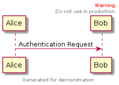 |
uml/reference_14-03-1@startuml scale 180*90 Bob->Alice : hello @enduml |
uml/reference_14-04-1@startuml skinparam titleBorderRoundCorner 15 skinparam titleBorderThickness 2 skinparam titleBorderColor red skinparam titleBackgroundColor Aqua-CadetBlue title Simple communication\nexample Alice -> Bob: Authentication Request Bob --> Alice: Authentication Response @enduml |
uml/reference_14-04-2@startuml title <u>Simple</u> communication example on <i>several</i> lines and using <back:cadetblue>creole tags</back> end title Alice -> Bob: Authentication Request Bob -> Alice: Authentication Response @enduml |
uml/reference_14-05-1@startuml caption figure 1 Alice -> Bob: Hello @enduml |
uml/reference_14-06-1@startuml Alice -> Bob : Hello legend right Short legend endlegend @enduml |
uml/reference_14-06-2@startuml Alice -> Bob : Hello legend top left Short legend endlegend @enduml |
uml/sequence-autonumber@startuml autonumber 10 10 B -> A: Hello A -> B: Yes? B -> A: Fresh foo! @enduml |
uml/sequence@startuml == Initialize == Alice->Bob : hello note left: this is a first note Bob->Alice : ok note right: this is another note Bob->Bob : I am thinking note left a note can also be defined on several lines end note == Repeat == Alice -> Bob: message 1 Bob --> Alice: ok ||| Alice -> Bob: message 2 Bob --> Alice: ok ||45|| Alice -> Bob: message 3 Bob --> Alice: ok == Get Funky == Bob -->x Alice Bob -->> Alice Bob --\ Alice Bob \\-- Alice Bob -->o Alice Bob <-->o Alice Bob <--> Alice note right: These are\nthe Funky arrows,\nYes,... @enduml |